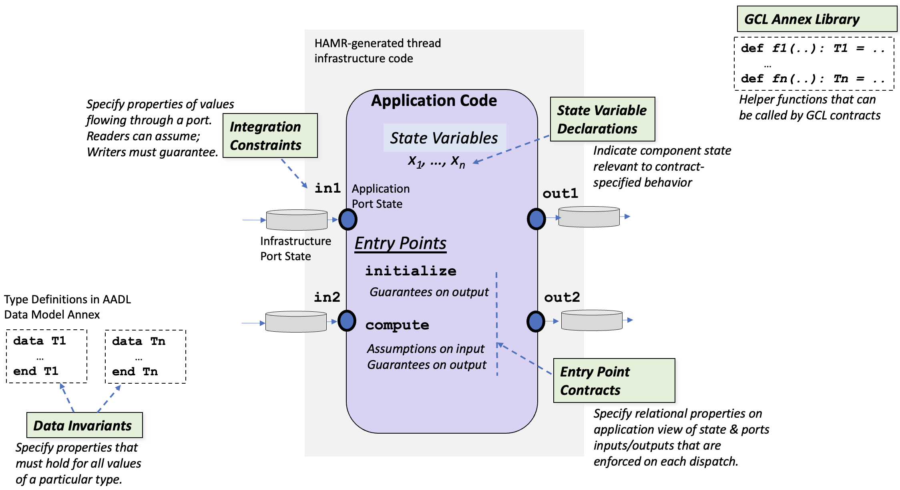

GUMBO Component Contracts
This chapter is a developer-oriented, example-based walkthrough of the structure of GUMBO contracts for thread components. It uses the Simple Isolette examples from the HAMR tutorials repository: first the data-port variant (periodic components communicating via data ports), then the event-data-port variant of the same system, which introduces the GUMBO constructs for reasoning about message-oriented communication.
We assume you have read the GUMBO Overview (motivation and framework architecture), the HAMR Overview, and HAMR Modeling Elements and Semantics Concepts — in particular, the concepts of thread components, port categories, entry points, and port freezing. Familiarity with the Rust component development chapters (implementation, manual unit testing) is helpful but not required.
This chapter addresses model-level specifications only. The translation of these contracts to code-level artifacts is covered elsewhere: executable GUMBOX contracts for testing and run-time monitoring in the GUMBOX translation chapter, and Verus contracts for formal verification of Rust implementations in the Verus translation chapter (see the closing section). This chapter narrates and motivates; for the complete catalog of constructs consult the GUMBO Quick Reference, and for the syntax the GUMBO Grammar.
Anatomy of a Component Contract
The figure below overlays the elements of a GUMBO component contract on the structure of a HAMR thread component. (The figure uses the abbreviation GCL — GUMBO Contract Language; in prose we simply say “GUMBO”.)

Working through the figure’s callouts:
-
State variable declarations declare variables that are local to the thread and that need to be referenced by the thread’s contracts to fully specify its behavior (a similar concept appears in other contract frameworks such as SPARK Ada). GUMBO-declared state variables are translated by HAMR into thread state declarations in the generated application code skeletons.
-
Integration constraints are invariants on the values flowing through a port. Each integration constraint clause pertains to a single port. Components reading from a port may assume the constraint; components writing to a connected port must guarantee it. Integration constraints let engineers specify, at the point where components are integrated by connecting ports, the value obligations each side takes on.
-
Entry point contracts specify relational properties over the application view of the component’s state and ports — the frozen input port values and pre-state at dispatch, related to the output port values and post-state at completion — enforced on each execution of an entry point. The “application view” is the Application Port State of the HAMR execution model: because inputs are frozen at dispatch and outputs are released at completion, each contract has an unambiguous pre/post reading.
-
Data invariants specify properties that must hold for all values of a particular data type (following the AADL Data Model Annex approach to type definitions). Note: data invariants are not yet implemented for HAMR Rust code generation — see the caveat below.
-
The GUMBO annex library provides helper functions that can be called from contract expressions, defined either locally within a thread’s contract or in shared library packages.
Entry Points and When Contracts Are Enforced
As described in the semantics chapter, a thread’s application code is organized into entry points invoked by the underlying scheduling framework:
-
The Initialize entry point executes exactly once, during the system’s initialization phase. It may not read input ports; it must initialize the component’s local state and put initial values on all output data ports (output event and event data ports need no initialization). Its GUMBO contract therefore consists only of guarantees — there are no inputs to make assumptions about.
-
The Compute entry point executes repeatedly during the system’s compute phase, once per dispatch. Its GUMBO contract can include assumptions about inputs and pre-state, and guarantees relating inputs and pre-state to outputs and post-state.
The form of the compute entry point depends on the thread’s declared dispatch protocol:
- Periodic threads are dispatched at regular time intervals (the
Periodproperty); the generated compute entry point is a singletimeTriggeredmethod, and the compute contract applies to every dispatch. - Sporadic threads are dispatched by the arrival of messages on incoming event or event data ports; the generated application code is a collection of event handlers, and GUMBO provides per-handler contract sections (
handleclauses).
HAMR code generation for Rust/seL4 does not yet support sporadic threads, so all examples in this chapter are periodic. If you want to see the intended contract style for sporadic components, consult the handler contracts section of the Quick Reference and the Slang-based examples it draws from.
Two Ways You Will Write Contracts
Before walking through the constructs, it is worth fixing the two workflows in which you will encounter them.
Specifying a New System from Scratch
When contracts are part of the initial design, a natural order of work is:
- Ports and data types first. Contracts are stated over the component’s interface, so the interface comes first.
- Integration constraints next. These are the component-boundary obligations — what each producer promises about the values it emits, and what each consumer needs to assume about the values it receives. Writing them early makes the negotiation between component roles explicit before any behavior is specified, and HAMR can check assume/guarantee compatibility as soon as ports are connected.
- Initialize guarantees. Pin down initial state and initial output data port values.
- Compute contracts, transcribed from requirements. Behavioral requirements often translate one-for-one into named contract clauses — a
compute_casescase per requirement is a common pattern, with the requirement’s identifier as the clause name and its prose in the documentation string.
Run the HAMR type checker (sireum hamr sysml tipe, also available in the CodeIVE command palette) after each increment — GUMBO blocks are parsed and checked, not treated as comments.
Adding or Evolving Contracts in an Existing System
GUMBO contracts live inside language "GUMBO" /*{ ... }*/ annotations within a thread’s part def. Because the contract text sits inside a SysMLv2 block comment, standard SysMLv2 tooling ignores it, while HAMR parses and processes it. This means contracts can be added to an existing, already-working model without disturbing anything else — and this is the workflow the tutorial series Adding GUMBO Thread Component Contracts to an Existing System (linked from the Recommended Reading Order) walks through in full.
When code has already been generated and you add or modify contracts, rerunning HAMR code generation does not overwrite your application code: HAMR re-weaves the updated contract-derived material (Verus contracts, state variable declarations, GUMBO helper methods) into marked regions of the developer-editable files while preserving your code outside those regions. See Thread Component Development in Rust for what the woven regions look like.
Running Example: The Simple Isolette (Data-Port Variant)
The Simple Isolette is an infant-incubator control system: a TempSensor samples the air temperature, a Thermostat compares it against a desired range provided by an OperatorInterface and commands a HeatSource on or off. The semantics chapter introduces the architecture in detail, including the variant used here: every thread is periodic, every thread is in its own process, and all communication is via data ports. The complete model and generated code are in the P-DP tutorial example.
The contract walkthrough centers on the Thermostat, whose interface is:
part def Thermostat :> Periodic_Rust_Thread {
port current_temp : DataPort { in :>> type : Isolette_Data_Model::Temp; }
port desired_temp : DataPort { in :>> type : Isolette_Data_Model::Set_Points; }
port heat_control : DataPort { out :>> type : Isolette_Data_Model::On_Off; }
...
}
Every dispatch, the thermostat reads the current temperature and the desired set points from its input data ports (data ports always hold the most recent value — they are never empty) and writes an Onn/Off command to its output data port. The sections below walk through its GUMBO block one section at a time.
State Variables
state
lastCmd: Isolette_Data_Model::On_Off;
The state section declares component-local variables that persist across dispatches — the component’s memory as seen by contracts. Here lastCmd records the most recent command the thermostat placed on heat_control; it exists so that the contract can express the requirement “the value of the Heat Control shall not be changed” (REQ_THERM_4 below), which relates the current dispatch’s output to the previous dispatch’s output.
Two obligations follow from declaring a state variable:
- the initialize contract should pin down its initial value, and
- in compute contracts, its pre-dispatch value is written
In(lastCmd)and its post-dispatch value is writtenlastCmd(see the In() operator below).
GUMBO-declared state variables are the aspects of a component’s state that are visible to model-level contracts — and therefore visible to every analysis that consumes those contracts, including system-level reasoning, which can alias and track component state variables across the schedule. HAMR auto-generates code-level representations of them (fields of the generated component state struct in the Rust skeleton) and keeps those definitions in sync with the model-level declarations as code generation is re-run.
Working at the code level, developers may additionally introduce their own state variables in the component struct — implementation details such as caches or diagnostic counters. Such manually added variables are not tracked at the model level or by the contract framework: model-level contracts cannot refer to them, and they play no role in integration checking or system reasoning. State that matters to the component’s specified behavior should be declared in the GUMBO state section. (Reference: Quick Reference — State Declarations.)
Helper Functions
functions
def Temp_Lower_Bound(): Base_Types::Integer_32 := 95 [i32];
def Temp_Upper_Bound(): Base_Types::Integer_32 := 104 [s32];
The functions section defines side-effect-free helper functions usable in the thread’s contract clauses. The simplest use, shown here, is naming constants so that requirement-level values are single-sourced: Temp_Lower_Bound() appears in the integration constraint below, and if the bound changes, it changes in one place.
Functions may also take arguments, which makes them the primary tool for formalizing requirement concepts as named predicates. For example, the sensed-temperature range that the thermostat’s integration constraint spells out could instead be captured as a predicate:
functions
def inSensedRange(degrees: Base_Types::Integer_32): Base_Types::Boolean :=
Temp_Lower_Bound() <= degrees & degrees <= Temp_Upper_Bound();
allowing the constraint to be written as inSensedRange(current_temp.degrees). The requirement concept now has a single, citable definition that can be reused across integration constraints and compute clauses — and, since HAMR translates GUMBO functions along with the contracts that use them, the same definition reappears in the generated test oracles and verification contracts.
Parameterized functions can also be layered to mirror the conditional structure of requirement text. The full Isolette example formalizes the alarm-range requirements of the FAA Requirements Engineering Management Handbook this way (excerpt from its GUMBO library):
def Allowed_LowerAlarmTemp(lower: Base_Types::Integer_32): Base_Types::Boolean :=
LowerAlarmTemp_lower() <= lower & lower <= LowerAlarmTemp_upper();
def isValidTempWstatus(value: Isolette_Data_Model::TempWstatus_i): Base_Types::Boolean :=
value.status == Isolette_Data_Model::ValueStatus.Valid;
def Allowed_LowerAlarmTempWStatus(lower: Isolette_Data_Model::TempWstatus_i): Base_Types::Boolean :=
(isValidTempWstatus(lower) implies Allowed_LowerAlarmTemp(lower.degrees));
Reading bottom-up: a lower-alarm set point (a value carrying a validity status) is allowed when, if its value is valid, then its degrees lie in the allowed range — a direct transcription of the requirement’s conditional structure, assembled from two smaller named predicates. A contract clause that uses Allowed_LowerAlarmTempWStatus(lower_alarm_tempWstatus) reads almost like the requirement itself.
Functions declared in a thread’s GUMBO block are local to that thread. Shared functions callable from multiple components — like the Isolette library functions just shown — are declared in package-level GUMBO libraries; see below, where the Simple Network Guard’s message predicates (clampedPayload, equalMessage, …) show the same requirement-formalizing style at library scope. (Reference: Quick Reference — Subclause Functions.)
Integration Constraints
integration
assume ASSM_CT_Range:
Temp_Lower_Bound() <= current_temp.degrees & current_temp.degrees <= Temp_Upper_Bound();
Integration constraints are invariants on the values flowing through a single port. The direction of the clause matches the direction of the port:
- an assume on an input port states what the component relies on about arriving values;
- a guarantee on an output port states what the component promises about the values it emits.
Here the thermostat assumes that every temperature it reads from current_temp lies in [95, 104]. The producer side of this handshake is in the TempSensor (in Devices.sysml), which guarantees a stronger constraint on its output:
part def TempSensor :> Thread {
port current_temp : DataPort { out :>> type : Isolette_Data_Model::Temp; }
...
language "GUMBO" /*{
integration
guarantee temp_range:
96 [i32] <= current_temp.degrees & current_temp.degrees <= 103 [i32];
}*/
}
When the two ports are connected in the model, HAMR’s integration checking (the HAMR Logika check, available in the CodeIVE and via sireum hamr sysml logika) verifies that the producer’s guarantee implies the consumer’s assumption — here, [96, 103] ⊆ [95, 104], so the connection is valid. This check happens at model assembly time, before any code exists: incompatible components are caught when they are wired together, not when the system misbehaves.
Integration constraints also flow down to the code level: the assumption becomes a postcondition of the generated get_current_temp() port API (the implementation may rely on it), and the guarantee becomes a precondition of the sensor’s put_current_temp() API (the implementation must establish it).
Note what the DP-variant model does not express: the well-formedness of the desired set points (lower <= upper). In this variant the OperatorInterface carries no GUMBO contract, so there is no producer-side guarantee for the thermostat to lean on — and the constraint appears instead as a compute assumption (next section). The event-data-port variant closes this handshake properly with an integration constraint pair. (Reference: Quick Reference — Integration Constraints.)
Initialize Entry Point Contracts
initialize
guarantee
initlastCmd: lastCmd == Isolette_Data_Model::On_Off.Off;
guarantee REQ_THERM_1 "The Heat Control command shall be Off initially.":
heat_control == Isolette_Data_Model::On_Off.Off;
The initialize contract consists of guarantees only — the initialize entry point may not read inputs, so there is nothing to assume. Its guarantees must cover the component’s obligations at the end of the initialization phase:
- every state variable is established —
initlastCmdpinslastCmdtoOff; - every output data port has an initial value —
REQ_THERM_1requires the initial heat command to beOff, transcribing the safety requirement that the heater must not start on.
Each clause has a name (used in generated code and reports) and an optional documentation string. Documentation strings may span lines using | as a continuation marker, which is the standard way to carry full requirement prose into the model (see the compute cases below). (Reference: Quick Reference — Initialize Contracts.)
Compute Entry Point Contracts
The compute contract specifies the behavior of every dispatch. For a periodic thread like the thermostat, the contract governs the generated timeTriggered entry point. A compute contract can combine three kinds of clauses — general assumptions, general guarantees, and case-based specifications — all of which relate the frozen inputs and pre-state to the outputs and post-state.
Compute Assumptions
compute
assume ASSM_LDT_LE_UDT: desired_temp.lower.degrees <= desired_temp.upper.degrees;
A compute assume is a per-dispatch precondition: the component is specified (and its implementation verified) only for dispatches in which the assumption holds. Here the thermostat’s control cases are only sensible when the set points are well-ordered.
When should a constraint be a compute assumption rather than an integration assumption? An integration assumption is preferable when the producing component can guarantee it — the obligation is then discharged once, at model assembly time. In this variant the OperatorInterface has no contract, so there is nothing to discharge the constraint against, and a compute assumption documents the reliance explicitly. (The obligation doesn’t vanish: it resurfaces as a precondition in the generated code contracts, and any caller — including the test infrastructure — must respect it.)
General Guarantees
guarantee lastCmd "Set lastCmd to value of output Cmd port":
lastCmd == heat_control;
General guarantees hold on every dispatch, regardless of which case applies. This one maintains the invariant that gives lastCmd its meaning: after every dispatch, the state variable equals the command just placed on the output port. Invariant-style properties that cut across all cases belong here rather than being repeated in each case.
Case-Based Specification with compute_cases
compute_cases
case REQ_THERM_2 "If Current Temperature is less than
|the Lower Desired Temperature, the Heat Control shall be set to On.":
assume (current_temp.degrees < desired_temp.lower.degrees);
guarantee heat_control == Isolette_Data_Model::On_Off.Onn;
case REQ_THERM_3 "If the Current Temperature is greater than
|the Upper Desired Temperature, the Heat Control shall be set to Off.":
assume (current_temp.degrees > desired_temp.upper.degrees);
guarantee heat_control == Isolette_Data_Model::On_Off.Off;
case REQ_THERM_4 "If the Current Temperature is greater than or equal
|to the Lower Desired Temperature
|and less than or equal to the Upper Desired Temperature, the value of
|the Heat Control shall not be changed.":
assume (current_temp.degrees >= desired_temp.lower.degrees
& current_temp.degrees <= desired_temp.upper.degrees);
guarantee heat_control == In(lastCmd);
compute_cases supports case-based specification in the style of contract cases found in frameworks like JML: each case pairs an assumption (a condition on inputs and pre-state) with a guarantee that must hold in the post-state whenever that case’s assumption held at dispatch. This structure maps naturally onto conditional requirements — note how each case is named after a requirement (REQ_THERM_2/3/4) and carries the requirement text in its documentation string.
Two things to check when writing cases:
- Coverage. Together with the compute assumption
ASSM_LDT_LE_UDT, the three cases partition the input space: the temperature is below the range, above it, or within it. Cases are not required to be exhaustive — a dispatch matching no case is constrained only by the general guarantees — but unintentional gaps are a common specification error. If some region of the input space is deliberately unconstrained, consider writing an explicit case withguarantee trueto record the decision. - Overlap. If two cases’ assumptions can hold simultaneously, both guarantees must hold; overlapping cases with conflicting guarantees make the contract unimplementable.
(Reference: Quick Reference — Compute Contracts.)
Pre-State: the In() Operator
REQ_THERM_4’s guarantee uses the one remaining construct:
guarantee heat_control == In(lastCmd);
In(x) denotes the value of state variable x at the beginning of the current dispatch (the pre-state); a bare lastCmd in a guarantee denotes its post-state value. In() applies only to state variables — input ports need no such operator, since their frozen values cannot change during the dispatch.
heat_control == In(lastCmd) is the canonical GUMBO idiom for “the value shall not be changed”: the command emitted this dispatch equals the command remembered from the previous one. Combined with the general guarantee lastCmd == heat_control, the state variable is re-established for the next dispatch. (Reference: Quick Reference — the In() operator.)
Event Data Ports: The P-EDP Variant
Data ports model sampled communication: the port always holds the most recent value. Event data ports model message communication: values are queued, a message may or may not be present at a given dispatch, and once dequeued it is gone. This changes what contracts must say — specifications must reason about the presence or absence of messages, and components typically must latch received values into state if they need them later.
The P-EDP variant of the Simple Isolette reworks the same system with event data ports: the operator’s set points arrive as messages only when the operator changes them, the temperature sensor announces changes as events, and the thermostat sends a heat command only when the commanded state actually changes. All threads remain periodic — each thread polls its event data ports at every dispatch. (This periodic-polling pattern is exactly what HAMR Rust/seL4 code generation supports today; sporadic, event-triggered dispatch is future work.)
Interface and State: Latching Inputs
part def Thermostat :> Periodic_Rust_Thread {
port current_temp : DataPort { in :>> type : Isolette_Data_Model::Temp; }
port temp_changed : EventDataPort { in :>> type : Isolette_Data_Model::Temp; }
port desired_temp : EventDataPort { in :>> type : Isolette_Data_Model::Set_Points; }
port heat_control : EventDataPort { out :>> type : Isolette_Data_Model::On_Off; }
language "GUMBO" /*{
state
currentSetPoints: Isolette_Data_Model::Set_Points;
lastCmd: Isolette_Data_Model::On_Off;
...
}*/
}
Compare with the DP variant: desired_temp is now an event data port, so set points arrive only occasionally — and the thermostat must remember the most recent ones. That is the role of the new state variable currentSetPoints: incoming set point messages are latched into it, and the control law is judged against the latched values rather than a port. Latching is the fundamental state pattern of event data port components: transient messages that influence future behavior must be captured in state, and the contract must say so.
Integration Constraints on Event Data Ports
Integration constraints on an event data port constrain the message payload whenever a message is present — no explicit presence guard is needed in the integration section. In this variant, the set-points well-formedness constraint that the DP variant could only state as a compute assumption becomes a proper two-sided handshake. The thermostat assumes:
integration
assume ASSM_LDT_LE_UDT "Incoming set point messages must be well-formed
|(lower desired temp at most upper desired temp).":
desired_temp.lower.degrees <= desired_temp.upper.degrees;
and the OperatorInterface — which now carries a contract — guarantees the producer side:
part def OperatorInterface :> Periodic_Rust_Thread {
port desired_temp : EventDataPort { out :>> type : Isolette_Data_Model::Set_Points; }
language "GUMBO" /*{
integration
guarantee LDT_LE_UDT "The lower desired temperature is at most the
|upper desired temperature in every emitted message.":
desired_temp.lower.degrees <= desired_temp.upper.degrees;
}*/
}
HAMR’s integration checking discharges the pair at model assembly time, exactly as for data ports. (Reference: Quick Reference — Integration Constraints on Event Data Ports.)
Initialization with Event Data Ports
initialize
guarantee initCurrentSetPoints "The latched set points start at the default range.":
currentSetPoints.lower.degrees == Default_Lower_Set_Point() &
currentSetPoints.upper.degrees == Default_Upper_Set_Point();
guarantee REQ_THERM_1 "The commanded heat state shall be Off initially. ...":
lastCmd == Isolette_Data_Model::On_Off.Off;
Unlike output data ports, output event and event data ports require no initialization — no message need be sent during the initialization phase. The initialize contract therefore constrains only the state variables: the latched set points start at a default range (defined by helper functions Default_Lower_Set_Point() / Default_Upper_Set_Point(), in force until the first set point message arrives), and the commanded state starts Off. Note how the original REQ_THERM_1 is adapted rather than dropped: since no initial message is sent on heat_control, the initial-off obligation moves to the state variable here — and to the HeatSource’s own initialize contract, which independently guarantees its heater state starts Off.
Reacting to Message Presence: HasEvent
The predicate HasEvent(port) is true at a dispatch exactly when a message is present on the (input) event data port. The latching behavior is specified as a presence/absence pair:
compute
assume INV_CSP "The latched set points are well-formed.":
currentSetPoints.lower.degrees <= currentSetPoints.upper.degrees;
guarantee latchSetPointsOnEvent "A newly received set point message is latched.":
HasEvent(desired_temp) implies
(currentSetPoints.lower.degrees == desired_temp.lower.degrees and
currentSetPoints.upper.degrees == desired_temp.upper.degrees);
guarantee latchSetPointsNoEvent "Otherwise the latched set points are unchanged.":
(not HasEvent(desired_temp)) implies currentSetPoints == In(currentSetPoints);
guarantee invCSPMaintained "Well-formedness of the latched set points is
|re-established for the next dispatch.":
currentSetPoints.lower.degrees <= currentSetPoints.upper.degrees;
Three patterns worth naming:
- The latch pair.
latchSetPointsOnEvent/latchSetPointsNoEventcover both outcomes of the presence test: a fresh message overwrites the latch; no message leaves it unchanged (In(currentSetPoints)— the frame condition on the state variable). - A re-established invariant.
INV_CSP(assume) andinvCSPMaintained(guarantee) bracket every dispatch with the same property: the latched set points are well-formed. The assumption is justified inductively — the initialize contract establishes it (98 ≤ 101 for the defaults), and each dispatch re-establishes it, because only payloads satisfying the integration assumptionASSM_LDT_LE_UDTare ever latched. - A trigger frame condition. The variant’s control logic runs only when something happened; without a trigger, nothing changes:
guarantee noTriggerNoChange "Without a triggering event (temperature change or
|new set points) the commanded state is unchanged.":
(not (HasEvent(temp_changed) or HasEvent(desired_temp)))
implies lastCmd == In(lastCmd);
The control law itself (REQ_THERM_2/3/4) is restated in this variant as implication-style guarantees rather than compute_cases — guarded by the event triggers and judged against the latched set points:
guarantee REQ_THERM_2 "If triggered and the Current Temperature is less than
|the Lower Desired Temperature, the commanded heat state
|shall be set to On.":
((HasEvent(temp_changed) or HasEvent(desired_temp)) and
current_temp.degrees < currentSetPoints.lower.degrees)
implies lastCmd == Isolette_Data_Model::On_Off.Onn;
(REQ_THERM_3 and REQ_THERM_4 follow the same shape; see the model source.) The guarantee-with-implies style and the compute_cases style are interchangeable ways to write conditional specifications; cases shine when the conditions partition the input space, while implies-guarantees compose more freely with presence guards.
A pitfall to remember: when combining HasEvent with access to the port’s payload, use the short-circuit operators and/or/implies rather than &/|. With &, both operands are evaluated, so HasEvent(p) & p.field > 0 accesses the payload even when no message is present — an error. With and, the payload access is only evaluated under the presence guard. (Reference: Quick Reference — GUMBO on Event Data Ports.)
Specifying Outputs: MustSend and NoSend
For output event data ports, GUMBO provides two predicates:
MustSend(port, value)— a message carryingvaluemust be sent onportthis dispatch (a one-argument formMustSend(port)requires a message be sent without constraining its value);NoSend(port)— no message may be sent onportthis dispatch.
The EDP thermostat uses them to specify a send-on-change policy — a command message is emitted exactly when the commanded state changes:
guarantee mustSendOnChange "A command message is sent exactly when the commanded
|state changes, and it carries the new state.":
(lastCmd != In(lastCmd)) implies MustSend(heat_control, lastCmd);
guarantee noSendNoChange "No message is sent when the commanded state is unchanged.":
(lastCmd == In(lastCmd)) implies NoSend(heat_control);
This is a common idiom for event data outputs: the state machine (here, lastCmd) is specified by the control-law guarantees, and the communication is specified separately as a function of state change. Note there is no NoEvent predicate — write not HasEvent(port) for input absence, and NoSend(port) for output silence.
The receiving side shows the same constructs from the consumer’s perspective. The HeatSource in the EDP variant latches arriving commands with a compact contract that combines nearly everything in this section:
language "GUMBO" /*{
state
heater_state: Isolette_Data_Model::On_Off;
initialize
guarantee REQ_THERM_1_HS "The heater shall be Off initially. ...":
heater_state == Isolette_Data_Model::On_Off.Off;
compute
guarantee HS_latch_cmd "A received command is latched into the heater state.":
HasEvent(heat_control) implies heater_state == heat_control;
guarantee HS_hold_cmd "If no command arrives, the heater state is unchanged.":
(not HasEvent(heat_control)) implies heater_state == In(heater_state);
}*/
Contract Features Not Shown by the Isolette Examples
The Isolette walkthroughs above cover the everyday constructs. A few remaining features are summarized here with pointers.
Package-Level GUMBO Libraries
Helper functions shared across components are declared in a package-level GUMBO library block. From the Simple Network Guard example’s GumboLib package:
package GumboLib {
private import HAMR::*;
private import SNG_Data_Model::*;
language "GUMBO" /*{
library
functions
def clampedPayloadLowerBound(): Base_Types::Integer_32 := 0[i32];
def clampedPayloadUpperBound(): Base_Types::Integer_32 := 100[i32];
def clampedPayload(m: SNG_Data_Model::Message): Base_Types::Boolean :=
(clampedPayloadLowerBound() <= m.payload) and (m.payload <= clampedPayloadUpperBound());
}*/
}
Other packages call library functions with the qualified form GumboLib::GUMBO__Library::clampedPayload(...) (the GUMBO__Library segment is the auto-generated container for library functions). (Reference: Quick Reference — Library Functions.)
Data Invariants
Data invariants constrain all values of a data type, at the type’s definition site:
part def TempWstatus_i :> Data {
part degrees : Base_Types::Integer_32;
attribute status : ValueStatus;
language "GUMBO" /*{
invariants
inv MaxMinEarthTemperatures "Temps should fall within the max/min temperatures
|recorded on planet Earth" :
-128 [s32] <= degrees and degrees <= 134 [s32];
}*/
}
Caveat: data invariants are not yet implemented for HAMR Rust code generation (they are supported in the Slang workflow). For Rust components today, express value constraints as integration constraints or entry point contracts instead. (Reference: Quick Reference — Data Invariants.)
Modifies Clauses
Initialize and compute contracts may carry a modifies clause listing the state variables the entry point is allowed to change:
compute
modifies currentSetPoints, lastCmd;
Everything not listed is implicitly unchanged — a frame condition that spares the contract from writing x == In(x) for every untouched variable. The Isolette contracts omit modifies (each has few state variables and states its frame conditions explicitly, e.g. latchSetPointsNoEvent); larger components benefit from it. (Reference: Quick Reference — Initialize and Compute contracts.)
Arrays and Quantifiers
GUMBO supports array-typed data with element access a#(i), size(a), and bounded quantification:
guarantee sorted:
(0 .. size(myArray) - 2) -> forAll { in i; myArray#(i) <= myArray#(i + 1) };
See the structs and arrays micro-example in the INSPECTA models repository for worked usages with the Rust/Verus workflow. (Reference: Quick Reference — Quantified Expressions.)
Sporadic Handler Contracts
For sporadic threads, GUMBO organizes compute contracts into per-event-port handle sections, each with its own modifies/assume/guarantee clauses. As noted above, sporadic components are not yet supported by HAMR Rust/seL4 code generation; the Quick Reference — Handler Contracts section and its Slang-based examples illustrate the intended design.
From Contracts to Code: What Comes Next
Everything in this chapter is a model-level specification. From these specifications, HAMR generates the code-level artifacts that make the contracts operational:
- GUMBOX Executable Contracts — the GUMBOX translation chapter shows how HAMR translates each GUMBO clause into executable Rust boolean functions used as oracles for manual unit testing, automated property-based testing, and run-time monitoring — using the same Isolette examples as this chapter. The Manual Unit Testing chapter already previews GUMBOX-based testing in the current workflow.
- GUMBO-to-Verus Translation — the Verus translation chapter shows how each contract clause becomes a Verus
requires/ensurescontract woven into the generated Rust application code (the Rust implementation chapter shows the woven regions), together with the verification workflow and practical guidance on common Verus limitations.
Component contracts are also the foundation for system-level reasoning: GUMBO System Properties shows how end-to-end properties of the composed system are specified and verified using component contracts as behavioral summaries.
For hands-on practice, the three-part tutorial series Adding GUMBO Thread Component Contracts to an Existing System (Simple Isolette) takes a working system through contract authoring, GUMBOX testing, and Verus verification — start with Part 1 or follow the Recommended Reading Order.